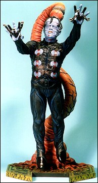

Introducing the New Bases and Background line from Avalon PLASTICS. These handsome dioramas are meant to accompany your favorite model kits in 1/4, 1/6 and 1/8 scale. There are 3 to choose from and many more to come. Distributed exclusively by Screamin' Products, Inc.
Extraterrestrial Landscape - This creepy background scene is perfect for use with all your Sci Fi, Predator and Alien kits.


Stellar Window - This backdrop of a spaceship window is perfect for all your Sci Fi and Fantasy kits.
Wall of Tortured Souls - This gothic horror scene is great for all your classic horror kits like Freddy and Hellraiser.
All kits are Vacuum formed from high impact styrene and packaged in a clear plastic bag with attractive header card. Model figures not included.
Suggested retail: $24.95 per kit.
 Screamin' Products is pleased to announce a new line of original female figure kits - the "SCREAMIN'
QUEENS". The first of these limited-edition collectibles is "Cylena, Queen of the Night", and will be
available in January-February 1997.
Screamin' Products is pleased to announce a new line of original female figure kits - the "SCREAMIN'
QUEENS". The first of these limited-edition collectibles is "Cylena, Queen of the Night", and will be
available in January-February 1997.
The Queen of the Night is a one-seventh scale resin model kit requiring limited assembly. The lovely Cylena is guaranteed to quicken the pulse of any red-blooded collector; she is crowned with a flying mane of raven hair and clothed in a wind-blown cloak (and not much else!)
Each Screamin' Queen will come with a booklet which describes the legend of the Screamin' Queens and the mythical history of each particular Queen. In months to come, look for the Queen of Outer Space, the Queen of the Dead, the Queen of Swords and many more.
Cylena, Queen of the Night, sculpted by Jeff Brower, is a limited edition, resin kit molded in one piece and stands over 12"
CYLENA, QUEEN OF THE NIGHT
Suggested retail: $59.95

From Hellbound; the second film in the Hellraiser Series, comes this newest addition to the Hellraiser Horror Line, the macabre and sadistic Doctor Channard. This is one of Screamin's most ambitious projects to date. Suspended from the tentacle of leviathan, Channard Prepares to battle his fellow Cenobites. This 1/4 scale kit stands over 21 inches in height, and contains 7 vinyl pieces, 6 resin snakes and mylar blades. Sculpted by Jeff Brower, this kit is destined to be a highly sought after item. Don't be caught asking the same question the the good doctor did atter his transformation: "...and to think, I hesitated!"
You ever feel like  ?
Head over to The Screamin' Vault!
?
Head over to The Screamin' Vault!
The Screamin' web site is still under construction, so you will see some missing pages. Take a look at what's there and bip them some comments: screamin@globalone.net.
Welcome to the web, Screamin'!
The Gremlins in the Garage webzine is a production of Firefly Design. If you have any questions or comments please get in touch.
Copyright © 1994-1997 Firefly Design.